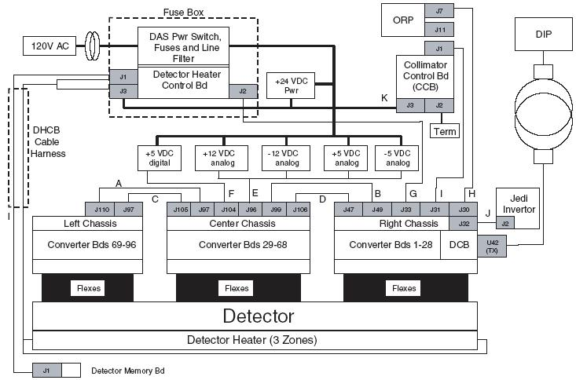
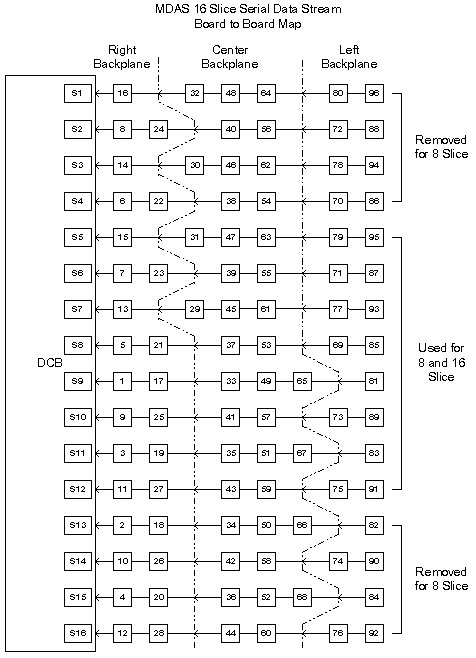
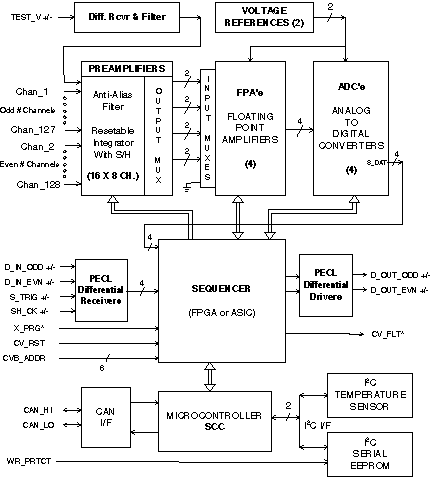
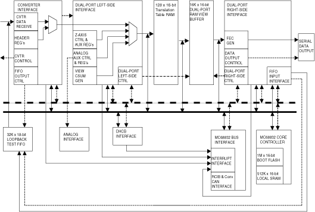

Operating Documentation
Direction 5224328-800, Rev# 5
Dir 5224328-800 LightSpeed 5.X HP60 Limited Access Service
Methods - Adv.
Operating Documentation |
| Last Revised on: | January 5, 2006 |
The Millennium Data Acquisition Subsystem (MDAS) used in the LightSpeed 16 scanner can be described as follows.
Refer to Illustration 1.
96 convertor cards, 1 DAS Control Board (DCB) distributed between 3 separate chassis.
The MDAS 16 requires the following voltages for operation:
+ 5 vdc digital.
+/- 5vdc analog.
+/- 12 vdc.
Each power supply is AC protected by a fuse located in the Fuse Box assembly.
The 3 chassis interface directly to the detector via pin and socket connectors.
Communications to the ORP is accomplished via the RCIB CAN bus.
Scan Data is transmitted via fiber optics to the DAS Interface Processor (DIP) located in the console. The 850 Mbaud slipring is the interface between the rotating and stationary gantry.
Inter chassis data transfer is performed via high speed serial bus. Reference Illustration 2.
DHCB communication is via RS232 interface.
Illustration 1: MDAS 16 Block Diagram

Illustration 2: Data Flow - Serial Data Stream

Illustration 3: Converter Board Block Diagram

The smallest element of the detector matrix is a detector cell. The detector cell, as presented to the DAS, is a zero-biased photodiode whose current output (photo-current Ip) is proportional to the incident x-ray flux.
A simple electrical circuit model for the x-ray detector cell is a current source in parallel with a capacitor (Cs, photodiode shunt capacitance) and a resistor (Rs, photodiode shunt resistance). One end of the three element parallel combination is connected to a DAS input signal channel, and the other end is connected to electrical circuit ground.
Some applications include the connection of multiple cells (in parallel) to a single DAS preamplifier channel. The output of such interconnected cells is referred to as a macro cell.
If an application includes cells that are not connected to a preamplifier input, such cells are connected to electrical ground by the FET array. These ground cells present a FET off impedance to the DAS. With respect to noise specifications and offset drift specifications, this off impedance is assumed to be greater than 1 gigohm, under all operating conditions.
For most DAS channels, the detector cell is one 1mm long in the azimuthal direction. However, some cell outputs (e.g., high-Z channels) are electrically connected in either pairs or triplets in the azimuthal direction to effectively form 2mm and 3mm long cells. Cells so connected are termed ganged cells. Because of the different source impedance associated with these cells, DAS performance is affected or degraded. However, the Converter Board preamplifier circuit is designed to be stable with the ganged source impedance cells.
The Converter boards receive the detector output signal on the same backplane connector as the rest of the DAS control and power connections. The backplane connector is defined in Converter Board Backplane Connector section in MDAS 16 Pinouts, Jumpers, and LEDs.
The maximum DC offset applied by the Converter Board on the photodiode is within ± 2.0mVDC, with no current from the detector (x-ray off).
The maximum DC offset applied by the Converter Board on the photodiode is between +3.5/-2.0mVDC, with full scale current (1.14μA) from the detector.
The converter card is externally controlled by the following signals:
S_TRIG (Differential, view trigger signal). The nominal frequency range of this signal is 500 Hz to 1640 Hz continuous. It is synchronized with the SH_CK signal, defined below. S_TRIG is used by the Converter Board to initiate a data acquisition timing cycle for all channels on the Converter Board.
SH_CK is a differential pair input signal that is used with S_TRIG to generate all data acquisition timing signals for the Converter Board. It is the clock used to shift data off the Converter Board to the Digital Control Board, and is free running. Anticipated frequency of this clock is 16MHZ.
CV_RST (Converter Board Reset) is a high level active signal that is activated by the DCB (DAS Control Board). It is a semi-hard reset for the Converter Board. This signal resets the on-board microcontroller and initializes all registers in the on-board FPGA/ASIC Sequencer to a fixed, known set of values. The On-Board microcontroller can then modify the registers.
The microcontroller sets up the board registers in response to commands received via the Controller Area Network (CAN) bus interface.
CAN_HI & CAN_LO (Differential, bidirectional Signal Pair) are used to implement the physical interface for the CAN control bus on the Converter Board.
CV_FLT* (Converter Fault Not). This is an open collector or open drain (wired-OR) output signal from the converter board(s). It is activated by the converter board microcontroller whenever it detects a variety of different fault conditions on the converter board. The signal is received and processed by the DCB (DAS Control Board). It is anticipated that the DCB will poll the converter board via the CAN bus, to determine which board pulled the “CV_FLT” signal line low.
TEST_V (Analog Differential Test Voltage) is a voltage that is generated by the DCB that is used to test the Converter Board during MDAS 16 self-test. The TEST_V is used to simulate a variable signal level from the detector.
ADDR 6:0 (Board Address) is a 7 line input bus that is used by the board to determine its CAN bus address. These inputs are hard wired with unique addresses on the MDAS 16 backplane for each of the Converter Board slots.
X_PRG* (FPGA Reconfigure Not) is a normally high edge-sensitive logic signal that can be momentarily held low and then released, to re-initiate the power-up configuration of the on-board FPGA Sequencer.
WR_PRTCT (EEPROM Write Protect) is an active high logic signal that can be used to provide hardware protect of the EEPROM contents on Converter board populated with EEPROMs with this feature.
The Converter Board functions in a data chain. Each board accepts serial data from the previous board, inserts its own data and retransmits the data downstream to the next Converter board or the DCB. The data bit time is equal to the period of the SH_CK input signal.
D_IN_OD (input data for odd numbered channels) is a differential signal pair for receiving data from the next upstream Converter board.
D_IN_EVN (input data from even numbered channels) is a differential signal pair for receiving data from the next upstream Converter board.
D_OUT_OD (output data for odd numbered channels) is a differential signal for transmitting data to the next downstream Converter board or DCB.
D_OUT_EVN (output data for even numbered channels) is a differential signal for transmitting data to the next downstream Converter board or DCB.
The serial data from each converter board is part of a six converter board data chain (see Illustration 2).
The converter board uses the following power supply voltages: +5 volt digital, +5 volt analog, -5 volt analog, +12 volt analog, and -12 volt analog.
Table 1: DC Power Requirements
| CHARACTERISTICS | +5V ANALOG | -5V ANALOG | +12V ANALOG | -12V ANALOG | +5V DIGITAL |
|---|---|---|---|---|---|
| Supply current (typical) | 0.15 A | 0.15 A | 0.17 A | 0.13 A | 0.52 A |
| Voltage tolerance | ±5% | ±5% | ±5% | ±5% | ±5% |
| Max. peak-to-peak noise & ripple1 | 5.0 mV | 5.0 mV | 5.0 mV | 5.0 mV | 5.0 mV |
| Max. RMS noise & ripple2 | 150 μV | 150 μV | - | - | - |
| Max. line regulation, 10% line voltage change | ±0.05% | ±0.05% | ±0.05% | ±0.05% | ±0.05% |
| Max. load regulation, 50% load change | ±0.05% | ±0.05% | ±0.05% | ±0.05% | ±0.05% |
| Output transient response, max. recovery to within 1% of initial setpoint, w/ 50% load change | 50 μsec | 50 μsec | 50 μsec | 50 μsec | 50 μsec |
| Max. temperature coefficient | 0.03%/°C | 0.03%/°C | 0.03%/°C | 0.03%/°C | 0.03%/°C |
| Min. adjustment range | ±5% | ±5% | ±5% | ±5% | ±5% |
| Overvoltage limitation | 6.0 VDC | 26.4 VDC between +/- Supply rails & ±15 V to Analog Gnd | 6.9 VDC | ||
| 1) As measured in 20 MHz bandwidth2) In 0.1 Hz to 5 kHz bandwidth | |||||
The converter board gives a visual indication of an error condition. There is a LED on each converter board that will flash several times during the power-up diagnostics. The LED should remain off if the diagnostics were successful. If the self-tests fail, then the LED for the failing converter board will flash a sequence code to indicate the type of error detected:
Table 2: Converter Board LED Error Codes
| ERROR CODE | LED FLASHES | DESCRIPTION |
|---|---|---|
| 0x0000 | 0 | No Error |
| 0x0001 | 1 | General Error |
| 0x0002 | 2 | Pre-Amp Error |
| 0x0004 | 3 | EEPROM Write/Read Error |
| 0x0008 | 4 | Register Access Error |
| 0x0010 | 5 | CAN Communication Error |
| 0x0020 | 6 | Temperature Error |
| 0x0040 | 7 | I2C Protocol Error |
| 0x0080 | 8 | Invalid CAN address received from Xilinx |
| 0x0100 | 9 | Host detected an error |
| 0x0800 | 12 | Card Identification Table Error |
| 0x1000 | 13 | Trim Table Error |
| 0x2000 | 14 | Config Table Error |
| 0x4000 | 15 | Fault Line is Asserted |
| 0x8000 | 16 | Reset Occurred |
The converter board status LED also flashes during CAN communications. Error definitions follow:
This is a general error notification, for miscellaneous errors that may occur on the converter board.
This fault occurs when there is a failure modifying the state of the pre-amps. This can occur when:
A request is made to put the pre-amps into standby.
A request is made to calibrate the A/Ds.
A request is made to put the pre-amps into offset trim state.
Every write to the EEPROM is verified by a read-back. The EEPROM error indicates that this verification failed.
A register access fault can occur only during the read-back verify phase of a register write command and can occur on either the register address write or on the register data write commands.
At each write of a converter board register, a read-back verify will be done on both the address register and data register to verify that the data was written properly. A fault will occur when the read-back does not compare to what was written.
The fault that is generated is determined by the source of the register write command. If the register write is commanded by the microcontroller during board initialization or mainline processing, the register fault status bit will be set and the board fault line activated. The firmware will continue normal operation so that it can be interrogated by the DCB.
The other source of register write commands comes from the DCB through CAN communication. When a register write is commanded, the register will be written and read-back verified before sending the ACK or NACK back to the controller. When there is a fault, a NACK will be sent, the register access fault bit will be set in the status register and communication will be terminated. The firmware will then continue processing normally. The board fault line will not be activated in this instance, since the controller knows there is an error and which converter card is at fault. There will be no error detection of attempts to write to read-only registers or register address out of range. This will allow for future Xilinx register additions or changes without any firmware changes.
A CAN Bus fault occurs when the CAN controller goes into a Bus Error condition. This condition may or may not be transient. In either case, the fault line will be activated. If it is a hard failure, the DCB will not be able to communicate with the converter card. The only indication of this failure is given via the card’s LED.
The firmware has detected an under/over temperature condition. The fault line will be activated.
This error is generated if any part of an i2c transaction fails.
This error occurs when the CAN address read from the FPGA is invalid (<1 and >96). This can occur if the FPGA did not initialize correctly. Since the address in invalid, no communication with this card can occur, so the only indication of this failure will be through the LED.
This error bit is reserved for the Host. It allows the host to signal an error condition by flashing the LED with this code. This can be useful if the Host detected an error from a specific card. For example, if the Host detects a parity error from a card, it can signal that card to flash the LED so the service technician can easily identify the failing card.
There are actually three bits associated with config table errors. Each bit represents one of the configuration tables. The respective bit for each config table will be set, if the table contains an invalid checksum.
This bit indicates that the converter card is holding the fault line in an asserted state. The fault line is asserted when the converter card encounters an error.
This bit indicates that the converter card has been reset. This bit is automatically cleared on the first State Query command received from the Host.
The DCB performs the function of controlling the DAS. It has interfaces with the following:
ORP for receiving setup instruction and reporting error and status.
Converter cards for setting them up for a scan and receiving channel data.
Detector for controlling FET switch positions.
DHCB for monitoring the detector temperature control function.
X-ray generation subsystem for monitoring kV and mA.
Slip-ring communication subsystem to output DAS data to the SRU.
Illustration 4: DCB Block Diagram

The DCB is the main control board for the Millennium Data Acquisition System (MDAS). It handles all the data streams from the converter cards and packages this data into a single high speed serial data stream. Specifically, it performs the following functions:
Interfaces with the On-board Rotating Processor(ORP) for Rx reception and scan completion, via the RCIB CAN interface.
Sets up and controls the converter cards, via the CAN interface.
Receives triggers and starts acquisitions with the converter cards.
Performs serial-to-parallel conversion on data streams from the converter cards, does parity checking on the data, and runs it through a translation table for view data ordering.
Adds Forward Error Correction (FEC) to the channel data and sends it across the slip-ring to the Image Chain Engine (ICE) via the high speed serial interface.
Detects jitter and time-outs in the view trigger signal.
Monitors the detector temperature, via the DHCB.
Monitors the power supply voltages to make sure they are within the software programmable limits.
Acquires the KV and mA values for each scan.
Controls the FET switch array in the detector to change the number and thickness of scan slices.
Monitors the MDAS 16 system for various faults.
Stores and sums the z-axis reference channels, and performs calculations that control the collimator cam positioning.
From the Converter Board:
Inner Row Serial Data Streams, for an 8 or a 16 slice system.
Outer Row Serial Data Streams, for a 16 slice system.
Converter CAN Bus communication for status, faults, chassis temperature readings, and serial number information.
From the On-board Rotating Processor(ORP):
Input View Triggers.
KV & mA analog signals.
RCIB CAN Bus communication for scan prescription information and Flash download.
RCIB CAN Fault Signal.
From the DHCB - RS-232 Bus communication for status, faults, detector temperature readings, and detector identification information.
From the Backplane - Power supply voltages.
To the Converter Boards:
Shift clock.
Trigger Signal.
Control information via the CAN communication bus.
Reset signal.
Analog test voltage.
To the On-board Rotating Processor(ORP):
Output View Triggers.
RCIB CAN Bus communication for DAS status, scan complete or error information.
Fault Signal.
To DHCB: RS-232 Bus communication for control information.
To Detector: FET Control signals.
To Slip-ring [and then on to the Scan Reconstruction Unit (SRU)]: High speed data stream containing the view data with embedded FEC and CRC.
Refer to MDAS 16 Power up Diagnostics for details on the power up diagnostics including backplane LED sequencing during power up testing.
Table 3: DCB (& CCB) Boot/Start-up Errors
| DCB (& CCB) BOOT OR START-UP ERRORS | ERROR CODE |
|---|---|
| Boot RAM Test Failure | 12 |
| Boot RAM copy of application code failed | 13 |
| Boot Code CRC Failure | 14 |
| Application CRC Failure | 15 |
| Boot Application CRC Failure | 16 |
| Application code size invalid | 17 |
| Boot Application code size is invalid | 18 |
Table 4: DCB (& CCB) Application Errors
| DCB (& CCB) Application Errors | ERROR CODE |
|---|---|
| Application Initialization Errors | |
| Unable to create controller heartbeat task | 20 |
| Unable to initialize the serial interface | 21 |
| Unable to init command execution and decode | 22 |
| An error was detected using the SCI Driver | 23 |
| Unable to init S/W watchdog refresh task | 24 |
| Unable to initialize idle task | 25 |
| Controller communication Init failed | 26 |
| Unable to create memory pool | 27 |
| Unable to init programmable Interrupt time | 28 |
| Serial Driver is unable to est. pend for read | 29 |
| Application Run-time Errors | |
| Unable to make S/W init required by applications | 40 |
| Unable to make MCU init required by applications | 41 |
| Unable to silence interrupts | 42 |
| Applications hardware failed self-test | 43 |
| Unable to create interrupt handlers | 44 |
| Unable to initialize hardware | 45 |
| Unable to create inter-task communication objects | 46 |
| Unable to create application tasks | 47 |
| Unable to initialize due to configuration data | 48 |
| Unable to initialize due to characterization data | 49 |
| Unable to initialize the error logger | 50 |
| Unable to initialize the tracer | 51 |
| Unable to create error logger task | 52 |
| Unable to create tracer task | 53 |
| Unable to create Platform task | 54 |
E_TRIG (External Trigger):
This will be the trigger input clock that occurs at up to 2811 Hz in an 16-slice mode. A positive going edge tells the DCB to begin sampling another “view” of data from the converter cards.
SHCK_2X and SHCK_1X:
SHCK_2X - (Double Frequency Shift Clock): This will be the main 32 MHz synchronous clock that is used as the clock for all converter interface functions. The clock is divided by 2 in the DCB Control FPGA into a 16MHz SHCK_1X: These two clocks are used to move and manipulate the converter stream data until it gets into the left side of the Dual-Port RAM. In addition, the DCB will have the ability to generate a 60 MHz synchronous clock (SHCK_2X) by changing a registered select line to the programmable clock generator. This will provide a 30 MHz shift clock (SHCK_1X) for 2812 Hz, 16-slice scanning capability.
DATAOUT_CLK_RAW (Raw Serial Data Clock):
This is a 83.33 MHz clock that goes to the DCB Control FPGA where it is divided by 2 (into DATAOUT_CLK). This 41.67 MHz clock is used for FEC generation on the data that comes out of the right side of the Dual-Port RAM. It also serves as the base clock for the serial data interface.
M68332_CLK_RAW (Raw MC68332 Clock):
This is a 50 MHz clock and is divided by 2 in the DCB Control FPGA (into M68332_CLK) to get the 25 MHz clock used to run the 68332 processor.
M68332_CLK (Clock input to MC68332):
This is a 25 MHz clock driven by the DCB Control FPGA that is used as a clock for the 68332 processor.
M68332_CLKOUT (Clock output from MC68332):
This is a 25 MHz clock driven by the MC68332 and sent back to the DCB control FPGA. It is used to control all bus accesses and functionality within the control FPGA.
CAN_CLK (Raw CAN Clock):
This is a 10 MHz clock used to run the RCIB and Converter CAN interfaces. This clock generated within the DCB Control FPGA by dividing the 50 MHz M68332_CLK_RAW by 5.
AD_CLK: (Analog to Digital Converter Clock):
This is a 1.79 MHz clock that is used for the A/D converter chip on board the DCB. This clock is derived in the DCB Control FPGA by dividing M68332_CLKOUT by 14.
WATCHDOG_CLK:
This is a 4.0 MHz clock which is buffered version of the clock used by the programmable clock generator to create the SHCK_2X, DATAOUT_CLK_RAW, M68332_CLK_RAW, and UART_CLK clock signals. This clock is monitored by the watchdog circuitry to detect and report clock instability.
UART_CLK (UART Clock for interface to DHCB):
This is a 6.25 MHz clock which is divided by 20 in the baud rate generator of the UART (located within the DCB Control FPGA) to create a 312.5 kHz baud rate clock. The baud rate clock operates at 16 times the transmit and receive clock rates (19.2 kHz) with a 1.73% baud rate error. The UART_CLK clock is derived from the M68332_CLK_RAW clock within the clock generator chip.
The Core Controller forms the basic computing element on the DCB. It is made up of the following elements:
Motorola 68332 microprocessor
1 MByte of FLASH memory.
1 MByte of SRAM.
Intel 82527 CAN communications interface.
Diagnostic LEDs.
Appropriate reset circuitry.
The Core Controller uses the features of the 68332 microprocessor, such as the RS-232 interface, interrupt controller, and flexible chip select mechanism.
The MC68332 Bus Interface is responsible for interrupt control, CAN control, SRAM control, FLASH control, and other miscellaneous control functions.
The Converter Board Interface is responsible for the following functions:
It will perform scan control sequencing. It takes the external trigger input, widens it, and drives the Converter trigger and DCB trigger signals. It also has a shift clock counter (used for the jitter detection circuitry, below), and the control mechanisms to use either external or internal triggers.
It generates all of the signals sent to the converter board during a scan and for receiving DAS channel data.
It receives serial data from the converter boards. The DCB will accept all streams, regardless of configuration, but will throw away unused channels in the 8-slice configuration.
It provides converter stream parity generation and checking. Parity is computed on each word of each stream received from the converter board. When a parity error occurs, this function will save the converter board and stream that contained the first parity error and interrupt the firmware running on the MC68332. The firmware has the option of aborting the scan (current implementation) or performing other processing when a parity error occurs.
It provides loop-back FIFO control logic for reading data out of the loop-back FIFO. This is useful for diagnostic purposes, where data from the loop-back FIFO is routed into the bit shuffler to test the data path for the Converter Board data streams.
It will maintain a view sequence counter to count & keep track of triggers within a scan.
It will provide jitter detection. It uses the shift clock counter to count how many shift clocks elapse between two trigger signals. The shift clock counter gets compared with three internal registers: a low limit register, a high limit register, and a timeout register (The software sets up values for these registers based on the scan speed). In this way it can be determined whether the duration of a trigger is outside of a given range, or if the trigger signal is has essentially stopped running.
It provides a diagnostic mode for filling a view with a known value.
It provides a diagnostic mode for receiving channel data from the Diagnostic Loopback FIFO instead of the converter boards.
It will provide a diagnostic mode for generating a single internal trigger or a series of them at a programmable frequency. The resolution of the internal trigger generation logic is one SH_CK period, which is 62.5 nS for a 16 MHz SH_CK and 33.3 nS for a 30 MHz SH_CK. Therefore, since the register controlling this frequency is 16-bits, the range of trigger periods is 62.5 nS to 4.096 mS for a 16 MHz SH_CK and 33.3 nS to 2.185 ms for a 30 MHz SH_CK.
The Address Translation RAM Buffer holds the information necessary to write view data into the Dual-Port RAM buffer in the proper order. Data coming into the DCB from the converter boards are in a serial order, with data from the converter board nearest the DCB coming in first, followed by the next card in the chain, etc. The Address Translation RAM will hold an address for each converter card channel that properly places that channel into the Dual-Port RAM buffer in an order that the SRU expects it, as determined by the View Record Format.
The address 7FFEh is stored in the Address Translation RAM as the destination for all channels that are not used in a 16-slice mode. Because all data written to this address is known to be meaningless, it is excluded from the calculation of the 16-slice view checksum.
The Dual-Port RAM Left-Side Interface will responsible for receiving the view data from the Converter Board Interface, adding view checksum data, and writing it all to the left side of the Dual-Port RAM. It is also responsible for summing and storing the z-axis reference channel data, Detector Heater Control Board detection, and AUX channel control.
The Dual-Port RAM Right-side Interface will be responsible for taking the view data out of the Dual-Port RAM buffer, examining the checksum to insure data integrity, generating Forward Error Correction (FEC) information on it, and sending it all off to the serial data transmitter.
The Dual-Port RAM view buffer will be large enough to hold two views of data. The purpose of holding two views is so that the converter / left-side interface can be writing one view while the data output / right side interface is reading another.
This buffer will be used for loopback diagnostics. When written by the MC68332 for loopback diagnostic purposes, the FIFO is being used as an alternate source of channel data, rather than the converter cards. That means that channel data will have to be scrambled from view order to converter order prior to writing the data. In this mode the FIFO is large enough to hold one view's worth of data. The FIFO will have the feature to repeatedly send the same data through the Converter Board Interface on multiple triggers. By using the FIFO as a source of converter data, the Converter Board and Dual-Port RAM Left-side Interface functionality can be verified.
When written by the Dual-Port RAM Right-side Interface, the FIFO is being used as a storage buffer for serial data output loopback data. When in this mode, any data written to the serial data transmitter by the Dual-Port RAM Right-side Interface is looped back through a serial data receiver and written into the FIFO. The FIFO can then be read by the MC68332 to verify serial data functionality.
The DCB requires power from the +5V digital, ±5V analog, ±12V analog, and +12V CAN supplies.
An A/D converter is used to measure the following. It has 16 bits of resolution. The measurements are updated at 1408Hz minimum.
kV and mA levels from the OBC/Generator.
All MDAS 16 power supply levels.
Test analog voltage generated by a 12bit DAC.
The major component of the sub-system monitoring block is an A/D converter that continuously gathers data and writes this data into the Auxiliary channels area of the data header.
Approximately every 250mS, firmware will poll the auxiliary channels that contain DAS power supply voltages and will test the voltages to the margins. If a supply is found to be outside of its margin, a warning message is to be logged into the error log.
Whenever a DAS Rx message is received, firmware will poll detector temperature and will test the temperature against the following limits:
If the detector temperature is over 36.5 degrees C, issue a warning message and allow scanning to continue.
If the detector temperature is under 35.5 degrees C, issue a warning message and allow scanning to continue.
The maximum required elapsed time from power-on to full specified DAS performance is one (1) hour. Time to meet full specified DAS performance is computed on the basis of two minutes warm-up per minute since power was last on, or 1 hour, whichever is less. However, under no conditions where the power has been temporarily turned off, shall the required warm-up (to meet full performance specification) be less than five (5) minutes.
Each Converter board has its own temperature sensor that is constantly monitored:
If the temperature reaches 55 degrees C, then a Warning Error message will be posted to the Status Area of the ExamRx Desktop and associated Error Message in the error log.
If the temperature reaches 62 degrees C, then the MDAS 16 will report an Over-Temperature Fault and will prevent further scanning until the DAS cools and is reset.
Conditions that lead to MDAS 16 over-temperature faults include:
Room Environment/Temperature.
MDAS 16 cooling fans not working or Air Plenum not installed.
MDAS 16 filters are dirty.
Gantry fans not working properly.